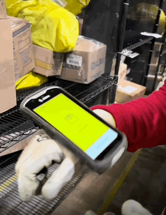
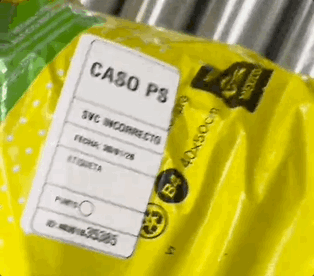

Inbound & Sorting — Clasificación en tiempo real
Rediseño de la herramienta handheld que usan los reps para clasificar paquetes al momento de llegar al service center. El objetivo: que en segundos pudieran identificar si un paquete era normal, voluminoso o tenía una anomalía que lo bloqueara.
Por acuerdo de confidencialidad no puedo mostrar pantallas ni datos específicos del producto. Este caso de estudio se centra en el proceso, las decisiones de diseño y los aprendizajes.
Ver siguiente proyecto
El reto
Cuando un paquete llega al service center, el rep tiene que tomar una decisión rápida: ¿es mercancía normal, es voluminoso, o tiene una anomalía que impide que salga a entrega? Una clasificación incorrecta tiene consecuencias directas — el paquete llega tarde, se pierde, o peor: es entregado cuando no debería serlo.
"Una mala clasificación no se nota en el service center. Se nota cuando el paquete llega al lugar equivocado o no llega nunca."
La herramienta handheld que usaban los reps para hacer esta tarea no estaba diseñada para ayudarlos a tomar esa decisión. La pantalla estaba saturada de información, no había señales visuales claras para distinguir los tipos de paquete y los casos con anomalía no tenían un tratamiento diferenciado. El rep tenía que interpretar — y en un service center con presión de tiempo, ruido y movimiento constante, eso generaba errores.
Mi rol como Product Designer incluyó el research contextual en campo y el diseño de las soluciones que transformaron esa herramienta.
El usuario
El usuario principal de esta herramienta es el rep de inbound: la persona que recibe los paquetes en el service center y los clasifica usando una handheld con escáner. No es un usuario nuevo en tecnología — la handheld es su herramienta de trabajo principal y la usa todo el día.
| Aspecto | Realidad del rep de inbound |
|---|---|
| Entorno | Service center con alto flujo de paquetes, ruido constante y presión de tiempo. |
| Herramienta | Handheld con escáner. Familiar para él — es su dispositivo de trabajo habitual. |
| Tarea crítica | Clasificar cada paquete como normal, voluminoso o con anomalía. Decisión rápida, consecuencias altas. |
| Condición física | De pie, en movimiento, con las manos ocupadas. No puede detenerse a leer. |
Mi proceso
Antes de diseñar nada, fui al service center. No hay forma de entender este tipo de trabajo sin verlo en primera persona — las entrevistas no capturan la presión, el ritmo ni las microinteracciones que ocurren cuando alguien clasifica paquetes durante horas seguidas.
Observación directa de los reps durante su jornada real. El objetivo era entender cómo tomaban la decisión de clasificación, dónde dudaban y qué señales buscaban en la pantalla para confirmar que habían hecho bien su trabajo.
Definir con precisión las tres categorías — mercancía normal, voluminoso, anomalía — y qué criterios determinaban cada una. Esta claridad conceptual fue el prerequisito para cualquier decisión de diseño.
Con el problema bien definido, se diseñaron tres intervenciones concretas: una etiqueta para paquetes con anomalía, pictogramas animados para indicar posicionamiento y una reestructuración completa de la pantalla.
Las soluciones se validaron con reps reales antes de implementarse. El feedback del campo determinó ajustes en el tamaño, la velocidad de las animaciones y la jerarquía visual de la pantalla restructurada.
Decisiones clave
Tres decisiones de diseño concretas, cada una respondiendo a un problema específico que observamos en campo.
Creamos una etiqueta visual diferenciada que se genera para los paquetes que no deben ir a entrega. El rep la ve en la handheld al escanear el paquete y sabe inmediatamente que debe separarlo del flujo normal, sin necesidad de leer texto ni interpretar nada. La señal es inconfundible.
En lugar de texto que indica dónde acomodar el paquete, diseñamos pictogramas animados que muestran el movimiento exacto. La animación elimina la ambigüedad de instrucciones escritas y funciona de forma más rápida y universal — independientemente del idioma o la experiencia del rep.
La pantalla original estaba saturada de información que el rep no necesitaba en el momento de clasificar. Redujimos a lo esencial: el tipo de paquete, la acción a tomar y la confirmación. Todo lo demás fue reubicado o eliminado. Menos información visible significa menos tiempo de procesamiento y menos errores.

Resultados y aprendizajes
Por acuerdo de confidencialidad no puedo compartir métricas específicas del producto. Lo que sí puedo compartir es lo que aprendí y cómo cambió mi forma de diseñar.
Ir al campo no es opcional, es el diseño. Sin visitar el service center habría diseñado para un usuario imaginario. La presión, el ritmo y el entorno físico no se capturan en una entrevista — hay que verlos.
Una señal visual clara vale más que mil palabras en una instrucción. La etiqueta de anomalía y los pictogramas animados funcionan porque eliminan la necesidad de interpretar. Cuando el usuario está bajo presión, no puede permitirse leer.
Quitar información también es diseño. La reestructuración de pantalla no añadió nada nuevo — reorganizó y eliminó. A veces la decisión de diseño más valiosa es decidir qué no mostrar.
Los errores de clasificación tienen consecuencias en el mundo real. Diseñar para logística me enseñó a pensar en el impacto aguas abajo de cada decisión de interfaz. Un error de diseño no es solo un problema de UX — puede ser un paquete perdido o una entrega fallida.